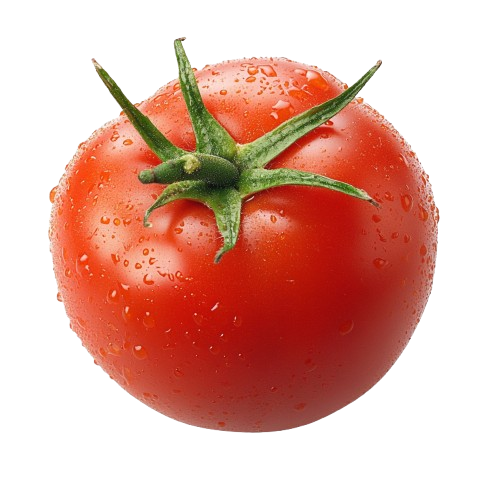

Tire uma foto da planta. O AgroScan identifica pragas e doenças com IA embarcada — sem internet, sem jargão, com tratamentos agroecológicos.

O Problema
Segundo a FAO, até 40% da produção agrícola mundial é perdida para pragas e doenças todo ano — prejuízo de mais de US$ 220 bilhões. No Brasil, as perdas com pragas e doenças ultrapassam R$ 60 bilhões anuais, segundo a Embrapa.
Com apenas 3% de mecanização no Nordeste e sem acesso a assistência técnica na maioria dos municípios rurais, a solução precisa estar no bolso — funcionar no campo, offline, sem depender de sinal ou de especialistas distantes.
Fluxo do Aplicativo
Quatro passos para obter diagnóstico e tratamento — sem precisar de internet.
Tire uma foto da planta
Aponte a câmera do celular para a folha, caule ou fruto com sintomas visíveis. Quanto mais nítida a foto, mais preciso o diagnóstico.
A IA analisa no celular
O aplicativo processa a imagem localmente, sem enviar nada para a internet. O resultado aparece em menos de 2 segundos.
Veja o diagnóstico
O app mostra o nome da doença ou praga em linguagem simples, junto com o nível de confiança da identificação e ícones explicativos.
Receba o tratamento
O aplicativo sugere tratamentos agroecológicos de baixo custo — como calda bordalesa e óleo de nim — com ingredientes fáceis de encontrar.
Funcionalidades
Cada detalhe pensado para a realidade do agricultor brasileiro.
Impacto Esperado
01 — Alimentação
Menor perda de produção significa mais alimento na mesa das famílias e para as comunidades locais. O Brasil produz mais quando o agricultor é apoiado.
02 — Economia
Diagnóstico precoce reduz custos com defensivos e aumenta a produtividade sem elevar despesas. Menos perda, mais lucro para quem trabalha a terra.
03 — Meio Ambiente
Tratamentos agroecológicos preservam o solo, a biodiversidade e a saúde dos agricultores. Tecnologia que respeita a terra e quem nela vive.
Pronto para explorar
Acesse a demonstração e veja como o AgroScan funciona na prática.